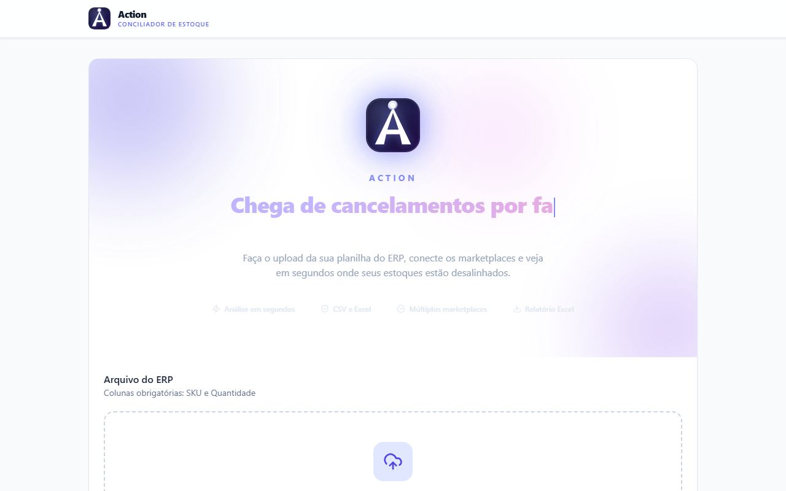
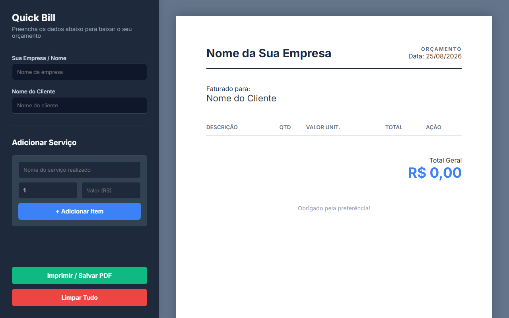
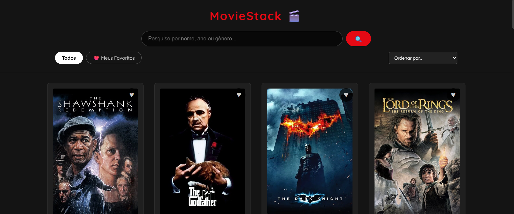

Back-End Developer · Java + Spring Boot
MATHEUS JUNIOR MARQUES
Estou me tornando desenvolvedor Back-End, aprofundando Java e Spring Boot sobre uma base sólida em lógica de programação, banco de dados e front-end construída na prática.
Sobre
Rumo ao Back-End, um passo de cada vez.

Tenho 20 anos, nasci e moro em Franca, SP. Sou formado em Desenvolvimento de Sistemas pela Etec e graduando em Desenvolvimento de Software Multiplataforma pela Fatec Franca.
Construí minha base prática em lógica, front-end e bancos de dados. E hoje foco 100% em me tornar desenvolvedor Back-End, aprofundando Java e Spring Boot para projetar APIs e regras de negócio robustas.
Antes do código, passei mais de um ano no mercado em funções de e-commerce e marketplace. O que me deu uma bagagem real de análise de dados, processos e resolução de problemas que carrego para dentro de cada sistema que construo.
Tech Stack
As ferramentas por trás do que eu construo.
Back-End
- Java
- Node.js
- Python
- Typescript
Database
- PostgreSQL
- MySQL
Front-End
- React
- JavaScript
- React Native
- Tailwind CSS
- HTML5 / CSS3
Tools
- Git & GitHub
- Vite
- Vercel
- Firebase
Projetos
Peças de portfólio, não apenas repositórios.

BANCO JAVA
1. Criar Conta
2. Depositar/Sacar
3. Transferir
4. Listar Tudo
5. Sair
Opção: 1
Número: 001
Titular: Matheus
Tipo (1-Corrente, 2-Poupança): 1
Conta criada com sucesso.Sistema Bancário Java
Simulador bancário via console — a base prática da minha evolução para Java e Spring Boot.
- Java
- POO
- Collections

Catálogo de Filmes
Catálogo interativo com busca, ordenação e favoritos persistentes.
- JavaScript
- CSS Grid
- LocalStorage
Experiência
Antes do código, aprendi negócio.
-
Jun/2026 — Atual
Assistente de Marketplace
Palácio das Ferramentas · Presencial
Continuidade da atuação em canais de marketplace: cadastro de produtos, atendimento e acompanhamento de pedidos em múltiplas plataformas de venda.
-
Set/2025 — Jun/2026 · 10 meses
Analista de Marketplace (promovido de Assistente)
Natural Fitness · Tempo integral
- Estratégia comercial orientada a dados: análise de indicadores para embasar decisões de precificação e catálogo.
- Gestão de campanhas de Ads em múltiplas plataformas (Mercado Livre, Shopee, Amazon, Magalu, TikTok).
- Resolução de problemas ponta a ponta: do fluxo de pedidos ao rastreamento e tratativa de ocorrências com transportadoras.
-
Mar/2025 — Set/2025 · 7 meses
Auxiliar de E-commerce
Loja do Som e Acessórios Automotivos · Franca, SP
Cadastro e atualização de produtos em marketplaces e geração de relatórios de desempenho para apoiar decisões comerciais.
Educação
Formação acadêmica.
Em andamento
Desenvolvimento de Software Multiplataforma
Fatec Franca — Faculdade de Tecnologia "Dr. Thomaz Novelino"
Fev/2025 — Dez/2027
Concluído
Desenvolvimento de Sistemas
Etec Doutor Júlio Cardoso
Fev/2022 — Dez/2024
Agora
Atualmente desenvolvendo meu back-end.
Estou aprofundando Java e Spring Boot partindo da lógica de Orientação a Objetos já praticada no meu Sistema Bancário, agora expandindo para APIs REST e persistência de dados.
{
"foco_atual": "Java + Spring Boot",
"base": "POO sólida — 4 pilares praticados",
"objetivo": "Construir APIs REST prontas para produção",
"status": em_progresso
}
GitHub
Meu código está todo lá.
Todo projeto que aparece aqui — e outros em construção — está aberto no meu GitHub.
@matheus-marques-dev